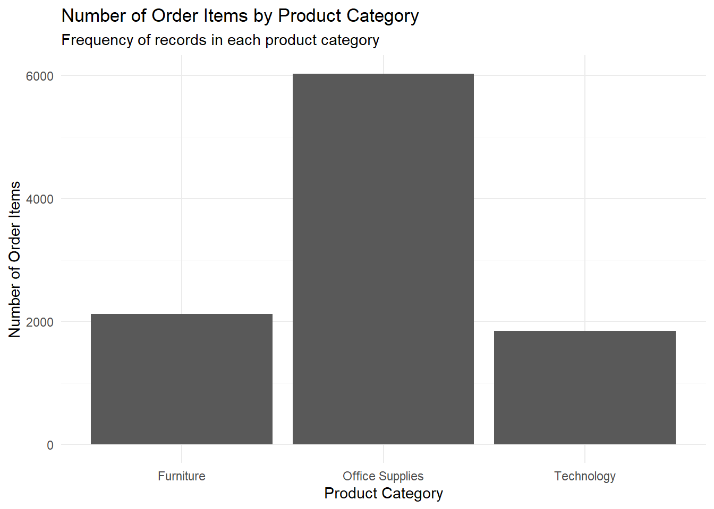
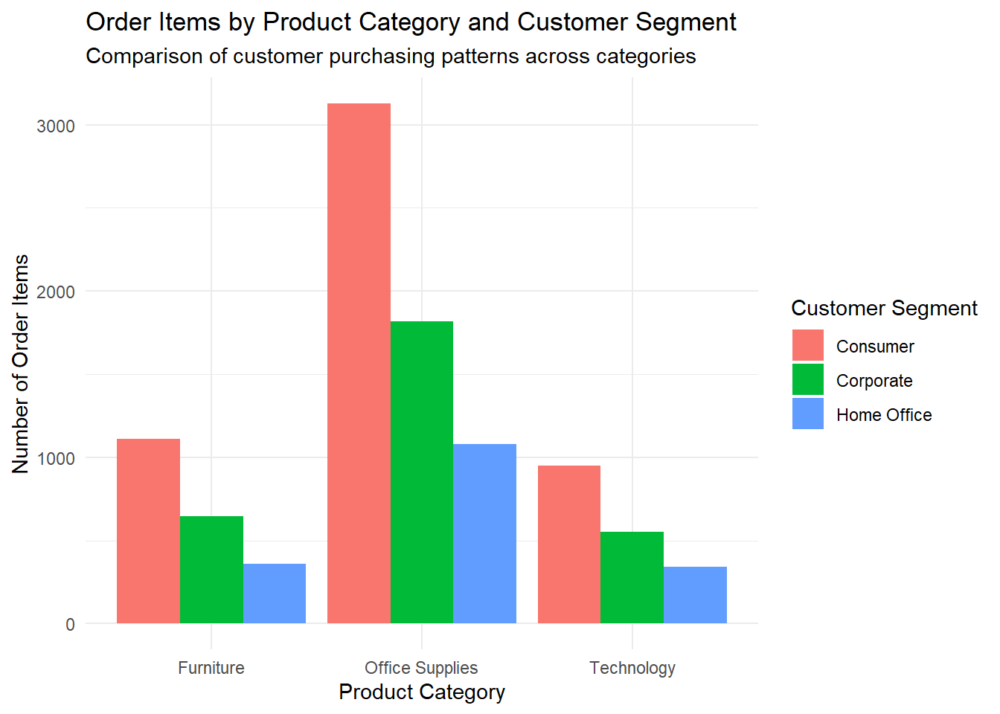
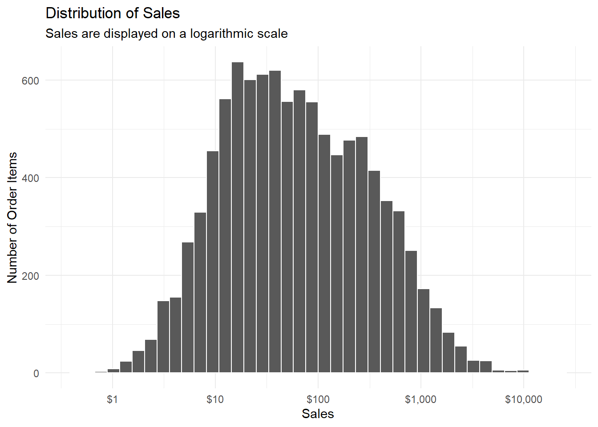
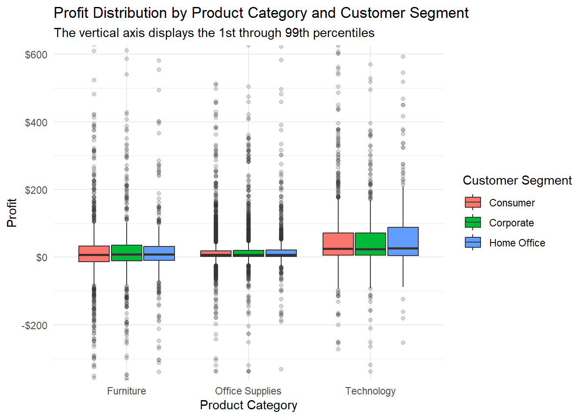
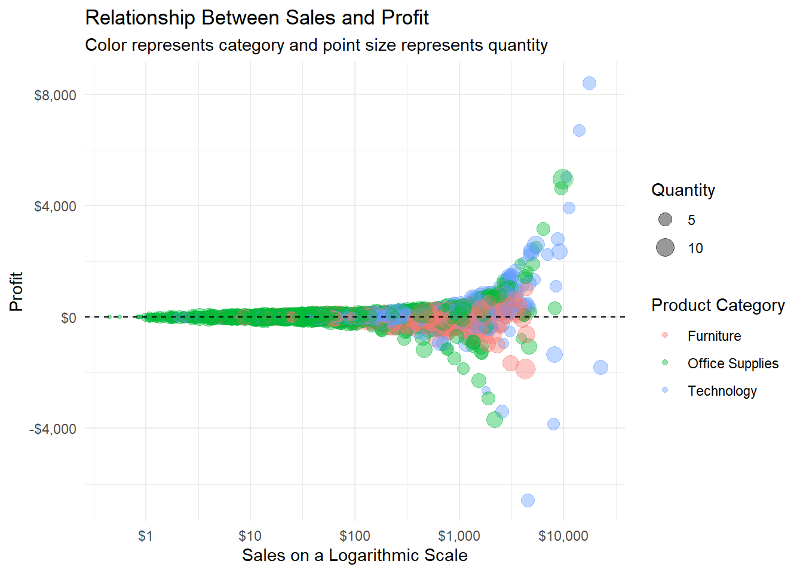
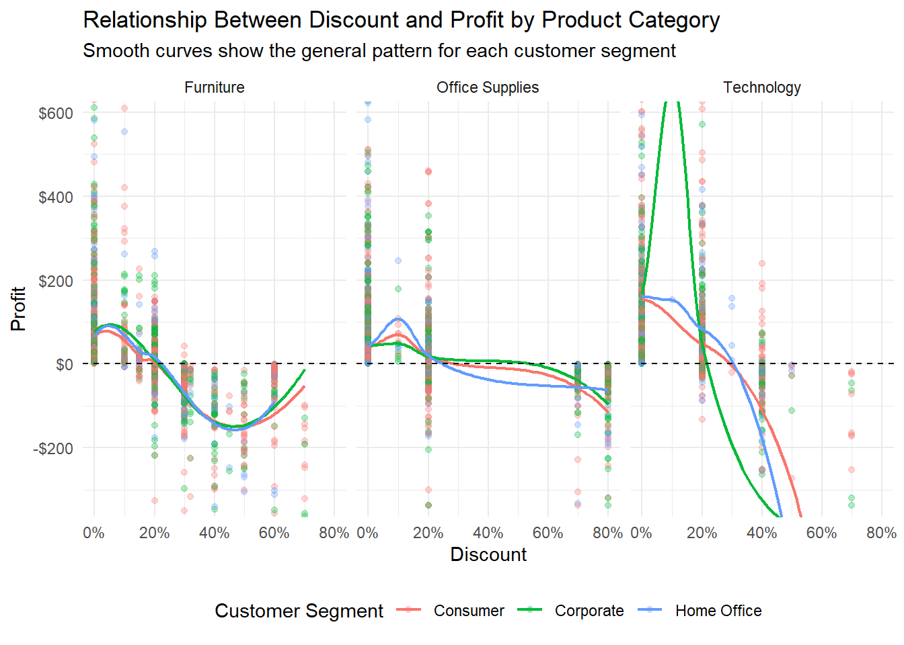
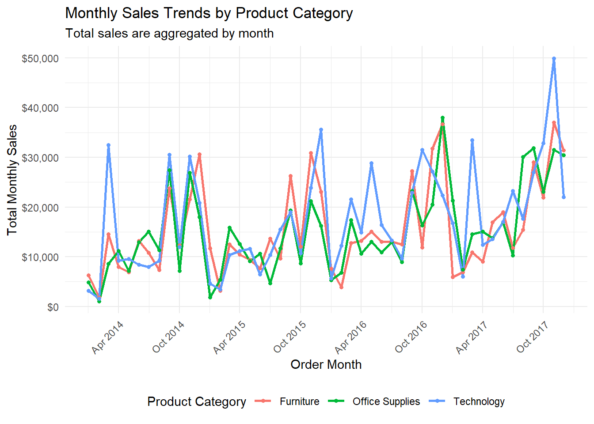
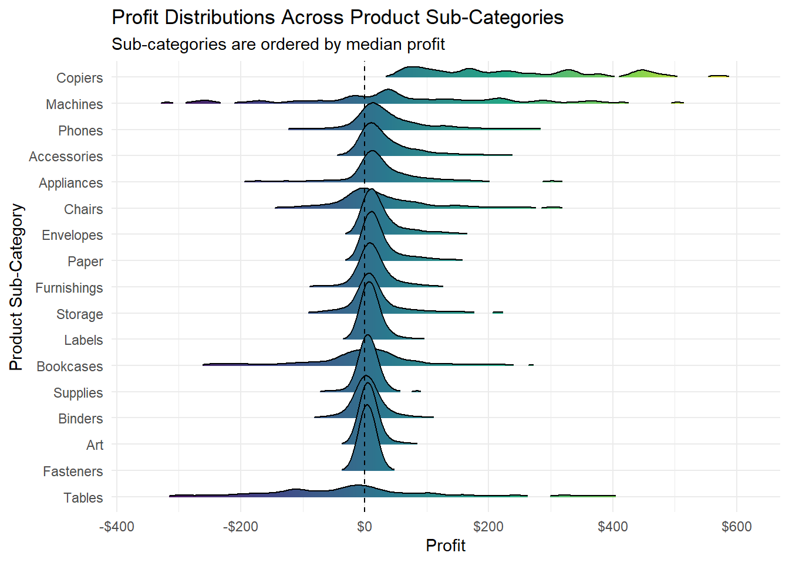
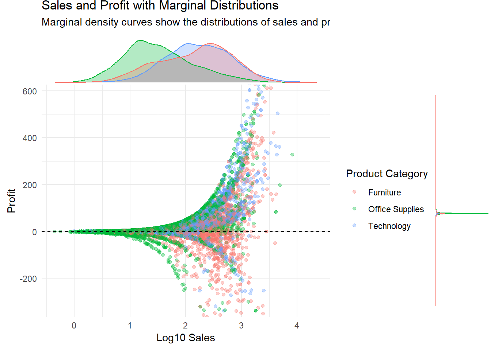

── Attaching core tidyverse packages ──────────────────────── tidyverse 2.0.0 ──
✔ dplyr 1.1.4 ✔ readr 2.1.5
✔ forcats 1.0.0 ✔ stringr 1.5.1
✔ ggplot2 4.0.0 ✔ tibble 3.2.1
✔ lubridate 1.9.4 ✔ tidyr 1.3.1
✔ purrr 1.0.2
── Conflicts ────────────────────────────────────────── tidyverse_conflicts() ──
✖ dplyr::filter() masks stats::filter()
✖ dplyr::lag() masks stats::lag()
ℹ Use the conflicted package (<http://conflicted.r-lib.org/>) to force all conflicts to become errors
载入程序包：'janitor'
The following objects are masked from 'package:stats':
chisq.test, fisher.test
载入程序包：'scales'
The following object is masked from 'package:purrr':
discard
The following object is masked from 'package:readr':
col_factorDataDescription
Data preparation
import the data
dt <- readxl::read_excel("US_Superstore_data.xls")clean the data
step 1: rename the colnames that can cause problem
dt_col <- dt %>%
clean_names()
colnames(dt) [1] "Row ID" "Order ID" "Order Date" "Ship Date"
[5] "Ship Mode" "Customer ID" "Customer Name" "Segment"
[9] "Country" "City" "State" "Postal Code"
[13] "Region" "Product ID" "Category" "Sub-Category"
[17] "Product Name" "Sales" "Quantity" "Discount"
[21] "Profit" step 2: check the data type and make the variable to the class I want
str(dt_col)tibble [9,994 × 21] (S3: tbl_df/tbl/data.frame)
$ row_id : num [1:9994] 1 2 3 4 5 6 7 8 9 10 ...
$ order_id : chr [1:9994] "CA-2016-152156" "CA-2016-152156" "CA-2016-138688" "US-2015-108966" ...
$ order_date : POSIXct[1:9994], format: "2016-11-08" "2016-11-08" ...
$ ship_date : POSIXct[1:9994], format: "2016-11-11" "2016-11-11" ...
$ ship_mode : chr [1:9994] "Second Class" "Second Class" "Second Class" "Standard Class" ...
$ customer_id : chr [1:9994] "CG-12520" "CG-12520" "DV-13045" "SO-20335" ...
$ customer_name: chr [1:9994] "Claire Gute" "Claire Gute" "Darrin Van Huff" "Sean O'Donnell" ...
$ segment : chr [1:9994] "Consumer" "Consumer" "Corporate" "Consumer" ...
$ country : chr [1:9994] "United States" "United States" "United States" "United States" ...
$ city : chr [1:9994] "Henderson" "Henderson" "Los Angeles" "Fort Lauderdale" ...
$ state : chr [1:9994] "Kentucky" "Kentucky" "California" "Florida" ...
$ postal_code : num [1:9994] 42420 42420 90036 33311 33311 ...
$ region : chr [1:9994] "South" "South" "West" "South" ...
$ product_id : chr [1:9994] "FUR-BO-10001798" "FUR-CH-10000454" "OFF-LA-10000240" "FUR-TA-10000577" ...
$ category : chr [1:9994] "Furniture" "Furniture" "Office Supplies" "Furniture" ...
$ sub_category : chr [1:9994] "Bookcases" "Chairs" "Labels" "Tables" ...
$ product_name : chr [1:9994] "Bush Somerset Collection Bookcase" "Hon Deluxe Fabric Upholstered Stacking Chairs, Rounded Back" "Self-Adhesive Address Labels for Typewriters by Universal" "Bretford CR4500 Series Slim Rectangular Table" ...
$ sales : num [1:9994] 262 731.9 14.6 957.6 22.4 ...
$ quantity : num [1:9994] 2 3 2 5 2 7 4 6 3 5 ...
$ discount : num [1:9994] 0 0 0 0.45 0.2 0 0 0.2 0.2 0 ...
$ profit : num [1:9994] 41.91 219.58 6.87 -383.03 2.52 ...dt_date <- dt_col %>%
mutate(order_date = as.Date(order_date),
ship_date = as.Date(ship_date),
order_year = year(order_date),
order_month = month(order_date,label = TRUE,abbr = TRUE,locale = "C"),# I do this locale=C because my pc speak Chinese
order_year_month = floor_date(order_date,unit = "month"),
shipping_days = as.numeric(ship_date - order_date),
profit_status = case_when(profit > 0 ~ "Profit",
profit == 0 ~ "Break Even",
profit < 0 ~ "Loss",
TRUE ~ NA))check the data structure
str(dt_date)tibble [9,994 × 26] (S3: tbl_df/tbl/data.frame)
$ row_id : num [1:9994] 1 2 3 4 5 6 7 8 9 10 ...
$ order_id : chr [1:9994] "CA-2016-152156" "CA-2016-152156" "CA-2016-138688" "US-2015-108966" ...
$ order_date : Date[1:9994], format: "2016-11-08" "2016-11-08" ...
$ ship_date : Date[1:9994], format: "2016-11-11" "2016-11-11" ...
$ ship_mode : chr [1:9994] "Second Class" "Second Class" "Second Class" "Standard Class" ...
$ customer_id : chr [1:9994] "CG-12520" "CG-12520" "DV-13045" "SO-20335" ...
$ customer_name : chr [1:9994] "Claire Gute" "Claire Gute" "Darrin Van Huff" "Sean O'Donnell" ...
$ segment : chr [1:9994] "Consumer" "Consumer" "Corporate" "Consumer" ...
$ country : chr [1:9994] "United States" "United States" "United States" "United States" ...
$ city : chr [1:9994] "Henderson" "Henderson" "Los Angeles" "Fort Lauderdale" ...
$ state : chr [1:9994] "Kentucky" "Kentucky" "California" "Florida" ...
$ postal_code : num [1:9994] 42420 42420 90036 33311 33311 ...
$ region : chr [1:9994] "South" "South" "West" "South" ...
$ product_id : chr [1:9994] "FUR-BO-10001798" "FUR-CH-10000454" "OFF-LA-10000240" "FUR-TA-10000577" ...
$ category : chr [1:9994] "Furniture" "Furniture" "Office Supplies" "Furniture" ...
$ sub_category : chr [1:9994] "Bookcases" "Chairs" "Labels" "Tables" ...
$ product_name : chr [1:9994] "Bush Somerset Collection Bookcase" "Hon Deluxe Fabric Upholstered Stacking Chairs, Rounded Back" "Self-Adhesive Address Labels for Typewriters by Universal" "Bretford CR4500 Series Slim Rectangular Table" ...
$ sales : num [1:9994] 262 731.9 14.6 957.6 22.4 ...
$ quantity : num [1:9994] 2 3 2 5 2 7 4 6 3 5 ...
$ discount : num [1:9994] 0 0 0 0.45 0.2 0 0 0.2 0.2 0 ...
$ profit : num [1:9994] 41.91 219.58 6.87 -383.03 2.52 ...
$ order_year : num [1:9994] 2016 2016 2016 2015 2015 ...
$ order_month : Ord.factor w/ 12 levels "Jan"<"Feb"<"Mar"<..: 11 11 6 10 10 6 6 6 6 6 ...
$ order_year_month: Date[1:9994], format: "2016-11-01" "2016-11-01" ...
$ shipping_days : num [1:9994] 3 3 4 7 7 5 5 5 5 5 ...
$ profit_status : chr [1:9994] "Profit" "Profit" "Profit" "Loss" ...check the missing data
dt_date %>%summarise(across(everything(),~ sum(is.na(.))))->missing_summary #
missing_summary# A tibble: 1 × 26
row_id order_id order_date ship_date ship_mode customer_id customer_name
<int> <int> <int> <int> <int> <int> <int>
1 0 0 0 0 0 0 0
# ℹ 19 more variables: segment <int>, country <int>, city <int>, state <int>,
# postal_code <int>, region <int>, product_id <int>, category <int>,
# sub_category <int>, product_name <int>, sales <int>, quantity <int>,
# discount <int>, profit <int>, order_year <int>, order_month <int>,
# order_year_month <int>, shipping_days <int>, profit_status <int>Based on the summary output. seems no missing items under each variable. Perfect!
Contingency tables
one way contingency table
#1. product category
category_table <- dt_date %>%
count(category) %>%
mutate(percent = n / sum(n))
category_table# A tibble: 3 × 3
category n percent
<chr> <int> <dbl>
1 Furniture 2121 0.212
2 Office Supplies 6026 0.603
3 Technology 1847 0.185#2. customer segment
segment_table <- dt_date %>%
count(segment) %>%
mutate(percent = n / sum(n))
segment_table# A tibble: 3 × 3
segment n percent
<chr> <int> <dbl>
1 Consumer 5191 0.519
2 Corporate 3020 0.302
3 Home Office 1783 0.178#3. region
region_table <- dt_date %>%
count(region) %>%
mutate(percent = n / sum(n))
region_table# A tibble: 4 × 3
region n percent
<chr> <int> <dbl>
1 Central 2323 0.232
2 East 2848 0.285
3 South 1620 0.162
4 West 3203 0.320#4. profit status
profit_status_table <- dt_date %>%
count(profit_status) %>%
mutate(percent = n / sum(n))
profit_status_table# A tibble: 3 × 3
profit_status n percent
<chr> <int> <dbl>
1 Break Even 65 0.00650
2 Loss 1871 0.187
3 Profit 8058 0.806 two way contingency table
#1. category and segment
category_segment_table <- dt_date %>%
drop_na(category, segment) %>%
group_by(category, segment) %>%
summarize(count = n(),.groups = "drop") %>%
pivot_wider(names_from = segment,values_from = count,values_fill = 0)
category_segment_table# A tibble: 3 × 4
category Consumer Corporate `Home Office`
<chr> <int> <int> <int>
1 Furniture 1113 646 362
2 Office Supplies 3127 1820 1079
3 Technology 951 554 342#2. region and profit status
region_profit_table <- dt_date %>%
drop_na(region, profit_status) %>%
group_by(region, profit_status) %>%
summarize(count = n(),.groups = "drop") %>%
pivot_wider(names_from = profit_status,values_from = count,values_fill = 0)
region_profit_table# A tibble: 4 × 4
region `Break Even` Loss Profit
<chr> <int> <int> <int>
1 Central 11 741 1571
2 East 19 553 2276
3 South 13 259 1348
4 West 22 318 2863#3. ship mode by customer segment
category_segment_table <- dt_date %>%
drop_na(category, segment) %>%
group_by(category, segment) %>%
summarize(count = n(),.groups = "drop") %>%
pivot_wider(names_from = segment,values_from = count,values_fill = 0)
category_segment_table# A tibble: 3 × 4
category Consumer Corporate `Home Office`
<chr> <int> <int> <int>
1 Furniture 1113 646 362
2 Office Supplies 3127 1820 1079
3 Technology 951 554 342#4. category by region
category_region_table <- dt_date %>%
drop_na(category, region) %>%
group_by(category, region) %>%
summarize(count = n(),.groups = "drop") %>%
pivot_wider(names_from = region,values_from = count,values_fill = 0)
category_region_table# A tibble: 3 × 5
category Central East South West
<chr> <int> <int> <int> <int>
1 Furniture 481 601 332 707
2 Office Supplies 1422 1712 995 1897
3 Technology 420 535 293 599Numerical summary
#1. overall numerical summary
overall_numeric_summary <- dt_date %>%
summarize(across(c(sales,quantity,discount,profit,shipping_days),
list(mean = ~ mean(.x, na.rm = TRUE),
median = ~ median(.x, na.rm = TRUE),
sd = ~ sd(.x, na.rm = TRUE),
IQR = ~ IQR(.x, na.rm = TRUE)),.names = "{.col}_{.fn}")) %>%
pivot_longer(cols = everything(),
names_to = c("variable", "statistic"),
names_pattern = "^(.*)_(mean|median|sd|IQR)$",
values_to = "value") %>%
pivot_wider(names_from = statistic,values_from = value)
overall_numeric_summary# A tibble: 5 × 5
variable mean median sd IQR
<chr> <dbl> <dbl> <dbl> <dbl>
1 sales 230. 54.5 623. 193.
2 quantity 3.79 3 2.23 3
3 discount 0.156 0.2 0.206 0.2
4 profit 28.7 8.67 234. 27.6
5 shipping_days 3.96 4 1.75 2 #2.numerical summary by product category
numeric_summary_by_category <- dt_date %>%
group_by(category) %>%
drop_na(category) %>%
summarize(
across(c(sales,quantity,discount,profit,shipping_days),
list(mean = ~ mean(.x, na.rm = TRUE),
median = ~ median(.x, na.rm = TRUE),
sd = ~ sd(.x, na.rm = TRUE),
IQR = ~ IQR(.x, na.rm = TRUE)),
.names = "{.fn}_{.col}"))
numeric_summary_by_category# A tibble: 3 × 21
category mean_sales median_sales sd_sales IQR_sales mean_quantity
<chr> <dbl> <dbl> <dbl> <dbl> <dbl>
1 Furniture 350. 182. 503. 388. 3.79
2 Office Supplies 119. 27.4 382. 68.2 3.80
3 Technology 453. 166. 1109. 381. 3.76
# ℹ 15 more variables: median_quantity <dbl>, sd_quantity <dbl>,
# IQR_quantity <dbl>, mean_discount <dbl>, median_discount <dbl>,
# sd_discount <dbl>, IQR_discount <dbl>, mean_profit <dbl>,
# median_profit <dbl>, sd_profit <dbl>, IQR_profit <dbl>,
# mean_shipping_days <dbl>, median_shipping_days <dbl>,
# sd_shipping_days <dbl>, IQR_shipping_days <dbl>#3. numerical summary by customer segment
numeric_summary_by_segment <- dt_date %>%
group_by(segment) %>%
drop_na(segment) %>%
summarize(
across(c(sales,quantity,discount,profit,shipping_days),
list(mean = ~ mean(.x, na.rm = TRUE),
median = ~ median(.x, na.rm = TRUE),
sd = ~ sd(.x, na.rm = TRUE),
IQR = ~ IQR(.x, na.rm = TRUE)),
.names = "{.fn}_{.col}"))
numeric_summary_by_segment# A tibble: 3 × 21
segment mean_sales median_sales sd_sales IQR_sales mean_quantity
<chr> <dbl> <dbl> <dbl> <dbl> <dbl>
1 Consumer 224. 53.7 586. 189. 3.76
2 Corporate 234. 56.5 599. 195. 3.84
3 Home Office 241. 52.4 756. 194. 3.78
# ℹ 15 more variables: median_quantity <dbl>, sd_quantity <dbl>,
# IQR_quantity <dbl>, mean_discount <dbl>, median_discount <dbl>,
# sd_discount <dbl>, IQR_discount <dbl>, mean_profit <dbl>,
# median_profit <dbl>, sd_profit <dbl>, IQR_profit <dbl>,
# mean_shipping_days <dbl>, median_shipping_days <dbl>,
# sd_shipping_days <dbl>, IQR_shipping_days <dbl>#4. numerical summary by region
numeric_summary_by_region <- dt_date %>%
group_by(region) %>%
drop_na(region) %>%
summarize(
across(c(sales,quantity,discount,profit,shipping_days),
list(mean = ~ mean(.x, na.rm = TRUE),
median = ~ median(.x, na.rm = TRUE),
sd = ~ sd(.x, na.rm = TRUE),
IQR = ~ IQR(.x, na.rm = TRUE)),
.names = "{.fn}_{.col}"))
numeric_summary_by_region# A tibble: 4 × 21
region mean_sales median_sales sd_sales IQR_sales mean_quantity
<chr> <dbl> <dbl> <dbl> <dbl> <dbl>
1 Central 216. 46.0 633. 185. 3.78
2 East 238. 54.9 621. 192. 3.73
3 South 242. 54.6 775. 192. 3.83
4 West 226. 60.8 525. 196. 3.83
# ℹ 15 more variables: median_quantity <dbl>, sd_quantity <dbl>,
# IQR_quantity <dbl>, mean_discount <dbl>, median_discount <dbl>,
# sd_discount <dbl>, IQR_discount <dbl>, mean_profit <dbl>,
# median_profit <dbl>, sd_profit <dbl>, IQR_profit <dbl>,
# mean_shipping_days <dbl>, median_shipping_days <dbl>,
# sd_shipping_days <dbl>, IQR_shipping_days <dbl>#5. numerical summary by customer segment
numeric_summary_by_category_segment <- dt_date %>%
group_by(category, segment) %>%
drop_na(category, segment) %>%
summarize(
across(c(sales,quantity,discount,profit,shipping_days),
list(mean = ~ mean(.x, na.rm = TRUE),
median = ~ median(.x, na.rm = TRUE),
sd = ~ sd(.x, na.rm = TRUE),
IQR = ~ IQR(.x, na.rm = TRUE)),
.names = "{.fn}_{.col}"))`summarise()` has grouped output by 'category'. You can override using the
`.groups` argument.numeric_summary_by_category_segment# A tibble: 9 × 22
# Groups: category [3]
category segment mean_sales median_sales sd_sales IQR_sales mean_quantity
<chr> <chr> <dbl> <dbl> <dbl> <dbl> <dbl>
1 Furniture Consum… 351. 184. 523. 354. 3.74
2 Furniture Corpor… 355. 191. 483. 433. 3.86
3 Furniture Home O… 337. 148. 477. 413. 3.78
4 Office Suppl… Consum… 116. 26.6 417. 66.6 3.76
5 Office Suppl… Corpor… 127. 28.8 350. 69.2 3.86
6 Office Suppl… Home O… 115. 28.8 323. 69.9 3.83
7 Technology Consum… 427. 160. 939. 376. 3.78
8 Technology Corpor… 445. 160. 1089. 356. 3.78
9 Technology Home O… 536. 200. 1505. 440. 3.65
# ℹ 15 more variables: median_quantity <dbl>, sd_quantity <dbl>,
# IQR_quantity <dbl>, mean_discount <dbl>, median_discount <dbl>,
# sd_discount <dbl>, IQR_discount <dbl>, mean_profit <dbl>,
# median_profit <dbl>, sd_profit <dbl>, IQR_profit <dbl>,
# mean_shipping_days <dbl>, median_shipping_days <dbl>,
# sd_shipping_days <dbl>, IQR_shipping_days <dbl>Plot
For the regular plots:
#1. bar chart of product categories
plot1 <- ggplot(dt_date,aes(x = category)) +
geom_bar() +
labs(
title = "Number of Order Items by Product Category",
subtitle = "Frequency of records in each product category",
x = "Product Category",
y = "Number of Order Items"
) +
theme_minimal()
plot1
#2.Side-by-side bar chart of category and customer segment
plot2 <- ggplot(dt_date,aes(x = category,fill = segment)) +
geom_bar(position = "dodge") +
labs(
title = "Order Items by Product Category and Customer Segment",
subtitle = "Comparison of customer purchasing patterns across categories",
x = "Product Category",
y = "Number of Order Items",
fill = "Customer Segment"
) +
theme_minimal()
plot2
#3. Histogram of sales
plot3 <- dt_date %>%
filter(sales > 0,!is.na(sales)) %>%
ggplot(aes(x = sales)) +
geom_histogram(bins = 40,color = "white" ) +
scale_x_log10(labels = dollar ) +
labs(
title = "Distribution of Sales",
subtitle = "Sales are displayed on a logarithmic scale",
x = "Sales",
y = "Number of Order Items"
) +
theme_minimal()
plot3
#4.Box plot of profit by category and customer segment
profit_lower <- quantile(dt_date$profit,0.01,na.rm = TRUE)
profit_upper <- quantile(dt_date$profit,0.99,na.rm = TRUE)
plot4 <- ggplot(dt_date,aes(x = category,y = profit,fill = segment)) +
geom_boxplot(outlier.alpha = 0.2,
position = position_dodge(width = 0.8)) +
coord_cartesian(ylim = c(profit_lower,profit_upper) ) +
scale_y_continuous(labels = dollar) +
labs(
title = "Profit Distribution by Product Category and Customer Segment",
subtitle = "The vertical axis displays the 1st through 99th percentiles",
x = "Product Category",
y = "Profit",
fill = "Customer Segment"
) +
theme_minimal()
plot4
#5. Scatterplot of sales and profit
plot5 <- dt_date %>%
filter(sales > 0,!is.na(profit),!is.na(category),!is.na(quantity)) %>%
ggplot(aes(x = sales,y = profit,color = category,size = quantity)) +
geom_point(alpha = 0.4) +
geom_hline(yintercept = 0,linetype = "dashed") +
scale_x_log10(labels = dollar ) +
scale_y_continuous(labels = dollar) +
labs(
title = "Relationship Between Sales and Profit",
subtitle = "Color represents category and point size represents quantity",
x = "Sales on a Logarithmic Scale",
y = "Profit",
color = "Product Category",
size = "Quantity"
) +
theme_minimal()
plot5
Extra plot not learned from the class
plot6: This plot shows whether higher discounts are associated with lower profits. Also shows whether that relationship differs across product categories and customer segments.
#6. Discount and profit by product category
plot6 <- dt_date %>%
drop_na(discount,profit,category,segment ) %>%
ggplot(aes(x = discount,y = profit,color = segment)) +
geom_point(alpha = 0.3) +
geom_smooth(method = "loess",se = FALSE,linewidth = 0.8) +
geom_hline(yintercept = 0,linetype = "dashed") +
facet_wrap(~ category ) +
coord_cartesian(ylim = c(profit_lower,profit_upper ) ) +
scale_x_continuous(labels = scales::percent) +
scale_y_continuous(labels = scales::dollar) +
labs(
title = "Relationship Between Discount and Profit by Product Category",
subtitle = "Smooth curves show the general pattern for each customer segment",
x = "Discount",
y = "Profit",
color = "Customer Segment"
) +
theme_minimal() +
theme(legend.position = "bottom")
plot6`geom_smooth()` using formula = 'y ~ x'
plot 7: This plot shows how sales change over time. In addition, the plot also tells me whether the three product categories follow similar or different patterns.
#7. Monthly sales trends by product category
monthly_category_sales <- dt_date %>%
drop_na(order_year_month,category,sales) %>%
group_by(order_year_month,category ) %>%
summarize(total_sales = sum(sales,na.rm = TRUE),.groups = "drop")
monthly_category_sales# A tibble: 144 × 3
order_year_month category total_sales
<date> <chr> <dbl>
1 2014-01-01 Furniture 6243.
2 2014-01-01 Office Supplies 4851.
3 2014-01-01 Technology 3143.
4 2014-02-01 Furniture 1840.
5 2014-02-01 Office Supplies 1072.
6 2014-02-01 Technology 1609.
7 2014-03-01 Furniture 14574.
8 2014-03-01 Office Supplies 8606.
9 2014-03-01 Technology 32511.
10 2014-04-01 Furniture 7945.
# ℹ 134 more rowsplot7 <- ggplot(
monthly_category_sales,
aes(x = order_year_month,y = total_sales,color = category)) +
geom_line(linewidth = 0.9 ) +
geom_point(size = 1.2 ) +
scale_x_date(date_breaks = "6 months",
labels = scales::label_date(format = "%b %Y",locale = "C")) +
scale_y_continuous(labels = scales::dollar ) +
labs(
title = "Monthly Sales Trends by Product Category",
subtitle = "Total sales are aggregated by month",
x = "Order Month",
y = "Total Monthly Sales",
color = "Product Category") +
theme_minimal() +
theme(legend.position = "bottom",
axis.text.x = element_text(angle = 45,hjust = 1))
plot7
plot8: This ridgeline plot compares the full profit distributions across product sub-categories.
#8.Profit distributions across product sub-categories
plot8 <- dt_date %>%
drop_na(sub_category,profit) %>%
dplyr::filter(profit >= profit_lower,profit <= profit_upper ) %>%
ggplot(aes(x = profit,
y = forcats::fct_reorder(sub_category,profit,median),
fill = after_stat(x)) ) +
geom_density_ridges_gradient(scale = 2.5,rel_min_height = 0.01 ) +
geom_vline(xintercept = 0,linetype = "dashed") +
scale_x_continuous(labels = scales::dollar) +
scale_fill_viridis_c(labels = scales::dollar ) +
labs(
title = "Profit Distributions Across Product Sub-Categories",
subtitle = "Sub-categories are ordered by median profit",
x = "Profit",
y = "Product Sub-Category",
fill = "Profit"
) +
theme_minimal() +
theme(legend.position = "none")
plot8Picking joint bandwidth of 13.4
plot 9: This plot shows the relationship between sales and profit. It also shows the separate distributions of both variables.
#9.Sales and profit with marginal distributions
base_plot <- dt_date %>%
dplyr::filter(sales > 0,!is.na(profit),!is.na(category)) %>%
ggplot(aes(x = log10(sales),y = profit,color = category)) +
geom_point(alpha = 0.35) +
geom_hline(yintercept = 0,linetype = "dashed") +
coord_cartesian(ylim = c(profit_lower,profit_upper) ) +
labs(
title = "Sales and Profit with Marginal Distributions",
subtitle = "Marginal density curves show the distributions of sales and profit",
x = "Log10 Sales",
y = "Profit",
color = "Product Category"
) +
theme_minimal() +
theme(legend.position = "right" )
plot9 <- ggExtra::ggMarginal(
base_plot,
type = "density",
groupColour = TRUE,
groupFill = TRUE,
alpha = 0.3
)
plot9